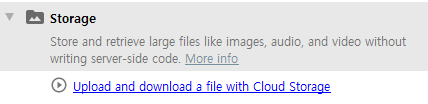
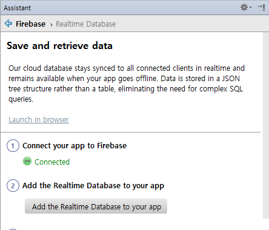
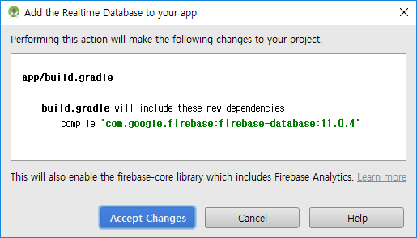
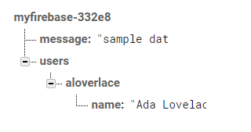
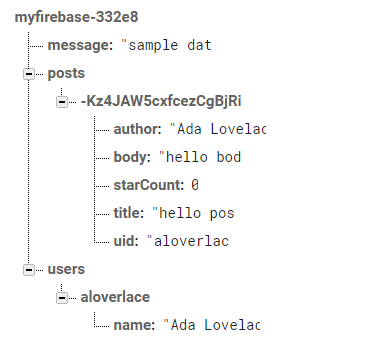

layout: true .top-line[] --- class: center, middle # 모바일 백앤드서비스(Firebase) ## Realtime Database --- ## Realtime Database * 연결된 모든 클라이언트들이 클라우드 데이터베이스와 싱크를 할 수 있음 * 오프라인이 되더라도 데이터베이스를 사용할 수 있음 * 데이터는 테이블이 아니라 JSON 트리 형태로 저장됨 * Firebase Assistant에서 Realtime Database - Save and retrieve data 선택  --- ## Realtime Database * 한번 Firebase에 연결했다면, Connected로 나옴  * Add the Realtime Database to your app 버튼 클릭 --- ## Realtime Database * Accept Changes  --- ## 데이터 쓰기 * 데이터베이스 레퍼런스를 가져와서 setValue()를 호출하여 씀 ```java // Write a message to the database FirebaseDatabase database = FirebaseDatabase.getInstance(); DatabaseReference myRef = database.getReference("message"); myRef.setValue("sample data"); ```  .footnote[https://github.com/jyheo/AndroidTutorial/blob/master/FirebaseTest/app/src/main/java/com/example/jyheo/firebasetest/MainActivity.java#L125-L129] --- ## 데이터 읽기 * ValueEventListener를 등록, 해당 값이 변경될 때마다 알려줌 * ValueEventListener를 등록하고 한번만 알려주길 원하면 addListenerForSingleValueEvent()를 사용 * ValueEventListener등록을 취소: removeEventListener() ```java myRef.addValueEventListener(new ValueEventListener() { @Override public void onDataChange(DataSnapshot dataSnapshot) { String value = dataSnapshot.getValue(String.class); Log.d(TAG, "Value is: " + value); } @Override public void onCancelled(DatabaseError error) { Log.w(TAG, "Failed to read value.", error.toException()); } }); ``` .footnote[https://github.com/jyheo/AndroidTutorial/blob/master/FirebaseTest/app/src/main/java/com/example/jyheo/firebasetest/MainActivity.java#L138-L152] --- ## 데이터 구조 * JSON 트리 * child(): 자식 노드의 DatabaseReference를 가져옴 ```java FirebaseDatabase database = FirebaseDatabase.getInstance(); DatabaseReference myRef = database.getReference("users"); String userid = "aloverlace" String username = "Ada Lovelace" myRef.child(userid).child("name").setValue(username) ```  --- ## 데이터 구조 * push(), 고유한 아이디를 갖는 자식 노드를 생성함 * Map<String, Object> 형태의 값을 저장하는 예 ```java FirebaseDatabase database = FirebaseDatabase.getInstance(); DatabaseReference myRef = database.getReference("posts"); String key = myRef.push().getKey(); HashMap<String, Object> postValues = new HashMap<>(); postValues.put("uid", "aloverlace"); postValues.put("author", "Ada Lovelace"); postValues.put("title", "hello post"); postValues.put("body", "hello body"); postValues.put("starCount", 0); myRef.child(key).setValue(postValues); ```  --- ## 트랜잭션 * 트랜잭션 처리, runTransaction() ```java FirebaseDatabase database = FirebaseDatabase.getInstance(); DatabaseReference myRef = database.getReference("posts/-Kz4JAW5cxfcezCgBjRi"); myRef.runTransaction(new Transaction.Handler() { @Override public Transaction.Result doTransaction(MutableData mutableData) { * Long starCount = mutableData.child("starCount").getValue(Long.class); starCount++; * mutableData.child("starCount").setValue(starCount); return Transaction.success(mutableData); } @Override public void onComplete(DatabaseError databaseError, boolean b, DataSnapshot dataSnapshot) { Log.d(TAG, "Transaction:onComplete:" + databaseError); } }); ``` --- ## 데이터 정렬과 필터링 * 데이터 정렬 - orderByChild(), orderByKey(), orderByValue() ```java DatabaseReference databaseReference = FirebaseDatabase.getInstance().getReference(); *Query TopPostsQuery = databaseReference.child("posts").orderByChild("starCount"); TopPostsQuery.addValueEventListener(new ValueEventListener() { @Override public void onDataChange(DataSnapshot dataSnapshot) { * for (DataSnapshot postSnapshot: dataSnapshot.getChildren()) { // TODO: handle the post } } ... } ``` * 필터링 - limitToFirst(), limitToLast() ```java // Last 100 posts, these are automatically the 100 most recent Query recentPostsQuery = databaseReference.child("posts").limitToFirst(100); ``` --- ## 종합 예제 * https://github.com/firebase/quickstart-android/tree/master/database